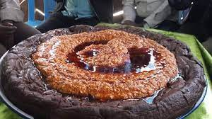
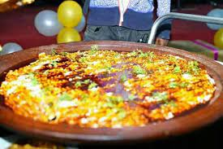
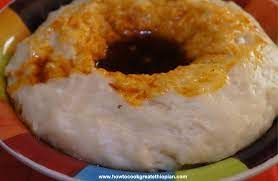
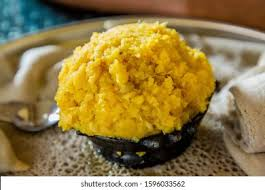

My Favorite
Like any bosy there are things i love and hate.Starting since i was kid i love to eat foods.
Myfavourite foods
- Dinch wet
- Timatim
- Sga wet
- firfir
From Oromo cultural foods i almst love all.It's known that Oromo's cultural food is so delicious, it's made using cheese,butter,yoghurt generally it's very organic.Some of them are
- Cumboo(
- Cororsaa
- Hancoote
- Akaahi qorii(dhodhobbo)
An animal i love
From animals i really love dogs the most because they are the best animals that i have met till today,they care for their owners,they are full of love.I have three dogs now two of the are big while the third one is very small.I realized that doggs are full of love because of Gurre i was the one who named him, he is so lovely and very strong he doesn't let anyone come near us without our permission he is so protective.The other one is named Bochora i called him bochoraa because he was very fat when he was small he is so pretty dog and understand what peoples might do on him and he hate water badly, the last one is very small and he makes us laugh,he plays well with peoples generally he is so cute.My favourite musics are
>| song | By |
|---|---|
| Cheta | Ada Ehi |
| lafti unkuramte | Magarsaa Bekele |
| Haleujjah | Yosef Ayalew |
| Dhugaakee | Gutu Shiferra |
